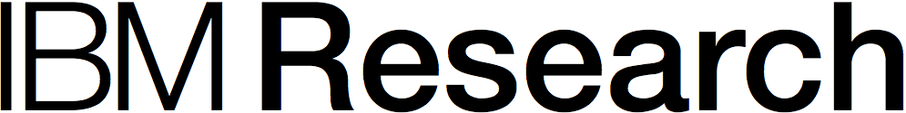
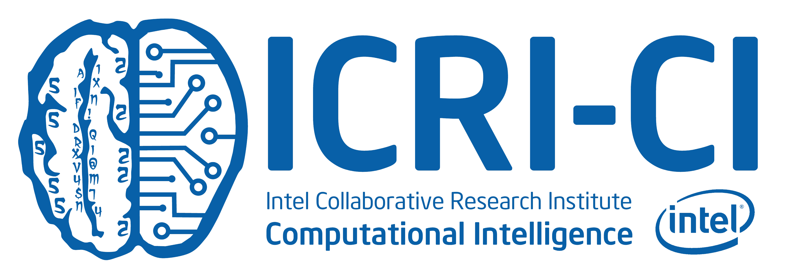
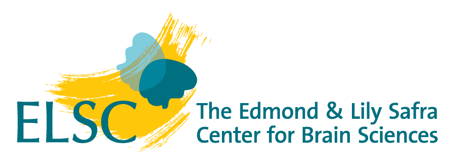

Computational Linguistics and Natural Language Processing are active research and development fields in Israel today, both in academia and industry. ISCOL is a venue for exchanging ideas, reporting on work in progress and established results, forming collaborations, and advancing connections between academia and industry. ISCOL is also a friendly stage for students for their first appearance in this community.
Program
09:00-09:05: Opening Words
09:05-10:25: Morning Session (Oral Presentations)
- Compositional Semantic Parsing of Instructions in Unseen Domains
Ofer Givoli and Roi Reichart - Neural semantic parsing over multiple knowledge-bases
Jonathan Herzig and Jonathan Berant - A Consolidated Open Knowledge Representation for Multiple Texts
Rachel Wities, Vered Shwartz, Gabriel Stanovsky, Meni Adler, Ori Shapira, Shyam Upadhyay, Dan Roth, Eugenio Martinez Camara, Iryna Gurevych and Ido Dagan - Semantically Motivated Hebrew Verb-Noun Multi-Word Expressions Identification
Chaya Liebeskind and Yaakov Hacohen-Kerner
10:25-11:00: Coffee Break
11:00-12:00: Invited Talk by Inbal Arnon (title: TBA)
12:00-14:00: Poster Session and Light Lunch (See list of posters at the bottom)
14:00-14:40: An Open Discussion on the future of the Mila Center
14:40-16:00: Afternoon Session (Oral Presentations)
- Too many corrections: Semantic reference-less evaluation for Grammatical Error Correction
Leshem Choshen and Omri Abend - Integrating Deep Linguistic Features in Factuality Prediction over Unified Datasets
Gabriel Stanovsky, Judith Eckle-Kohler, Yevgeniy Puzikov, Ido Dagan and Iryna Gurevych - ConStance: Modeling Annotation Contexts to Improve Stance Classification
Kenneth Josseph, Lisa Friedland, William Hobbs, David Lazer and Oren Tsur - Found in Translation: Reconstructing Phylogenetic Language Trees from Translations
Ella Rabinovich, Noam Ordan and Shuly Wintner
16:00-16:30: Coffee Break
16:30-17:30: Evening Session
- Controlling Linguistic Style Aspects in Neural Language Generation
Jessica Ficler and Yoav Goldberg - Unsupervised Query-Focused Multi-Document Summarization
Guy Feigenblat, Haggai Roitman, Odellia Boni and David Konopnicki - Query Focused Abstractive Summarization: Adapting Sequence-to-Sequence Models with Query Relevance
Tal Baumel, Matan Eyal and Michael Elhadad
Poster Presentations:
- Towards String-to-Tree Neural Machine Translation
Roee Aharoni and Yoav Goldberg - A Transition-Based Directed Acyclic Graph Parser for Universal Conceptual Cognitive Annotation
Daniel Hershcovich, Omri Abend and Ari Rappoport - Interactive Abstractive Summarization for Event News Tweets
Ori Shapira, Hadar Ronen, Adler Meni, Yael Amsterdamer, Judit Bar-Ilan and Ido Dagan - Semantic helper for text compose
Boris Pevzner - Acquiring Predicate Paraphrases from News Tweets
Vered Shwartz, Gabriel Stanovsky and Ido Dagan - Learning Agreement with Deep Neural Networks
Jean-Philippe Bernardy and Shalom Lappin - Mutual Convergence of Mutlimodal Linguistic Properties in Spoken Dialogue Systems
Eran Raveh - Unsupervised Event Detection in Twitter
Yuval Shachaf, Gennadi Lembersky and Roy Klein - Evaluating Semantic Parsing against a Simple Web-based Question Answering Model
Alon Talmor, Mor Geva and Jonathan Berant - Semantic Structure-Based Evaluation Metrics for Sentence Simplification
Elior Sulem, Omri Abend and Ari Rappoport - Recognizing Mentions of Adverse Drug Reaction in Social Media Using Knowledge-Infused Recurrent Models
Gabriel Stanovsky, Daniel Gruhl and Pablo Mendes - Automatic Detection of Translation Direction
Ilia Sominsky and Shuly Wintner - Thomson Reuters Self-Service Classification
Ehud Azikri and Hila Zarosim - Interactive Semantic Parsing on Semi-Structured Tables
Tomer Wolfson - Floating Agenda Parser
Dor Muhlgay and Jonathan Berant - Reinforcing Abstractive Text Summarization with Reading-Comprehension
Matan Eyal, Tal Baumel and Michael Elhadad - Improving Claim Stance Classification with Lexical Knowledge Expansion and Context Utilization
Roy Bar-Haim, Lilach Edelstein, Charles Jochim and Noam Slonim - lex2vecs: Combining dictionary knowledge and word embeddings for word sense disambiguation
Morris Alper and Noam Ordan - Multi-Label Classification on Patient Notes
Tal Baumel, Jumana Nassour-Kassis, Noemie Elhadad and Michael Elhadad - Crafting a lexicon of referential expressions for NLG applications
Ariel Gutman, Alexandros Andre Chaaraoui and Pascal Fleury - Where’s my head? Task definition, dataset and initial results for fused head recovery
Yanai Elazar and Yoav Goldberg - Contextualization and Regularization of Word Embeddings for Machine Comprehension
Shimi Salant and Jonathan Berant - Deep Learning for Preprocessing Historical Hebrew Texts: Error Correction, Vocalization and Abbreviation Expansion
Avi Shmidman, Shaltiel Shmidman, Moshe Koppel and Yoav Goldberg - Detection of Native Language Based on Micro Messages
Oren Tsur, Yohay Nahari and Maayan Matook - Causal factors of language change under control - the case of frequency bias in laws of semantic change
Haim Dubossarsky, Eitan Grossman and Daphna Weinshall - Rare word embeddings with Sub-word similarity based search: better representations without more knowledge, data, or training
Clayton Greenberg, Mittul Singh, Youssef Oualil, and Dietrich Klakow
Time and Location
Monday, September 25, 2017
The Brindell and Milton Gottlieb Auditorium (A300),
The Rothberg Family buildings,
Rachel and Selim Benin School of Computer Science and Engineering,
Edmond J. Safra Campus, Jerusalem
The poster session will be held in floor 1 of the same building.
{kind=link}
Program Committee
Omri Abend, HUJIJonathan Berant, TAU
Organization Committee
Omri Abend, HUJIDaniel Hershcovich, HUJI
Elior Sulem, HUJI
Leshem Choshen, HUJI
Sponsors


We also acknolwedge the support of the Edmond and Lily Safra Center for Brain Sciences. 
Important dates
Submission deadline: August 17
Notification: August 25
ISCOL: September 25